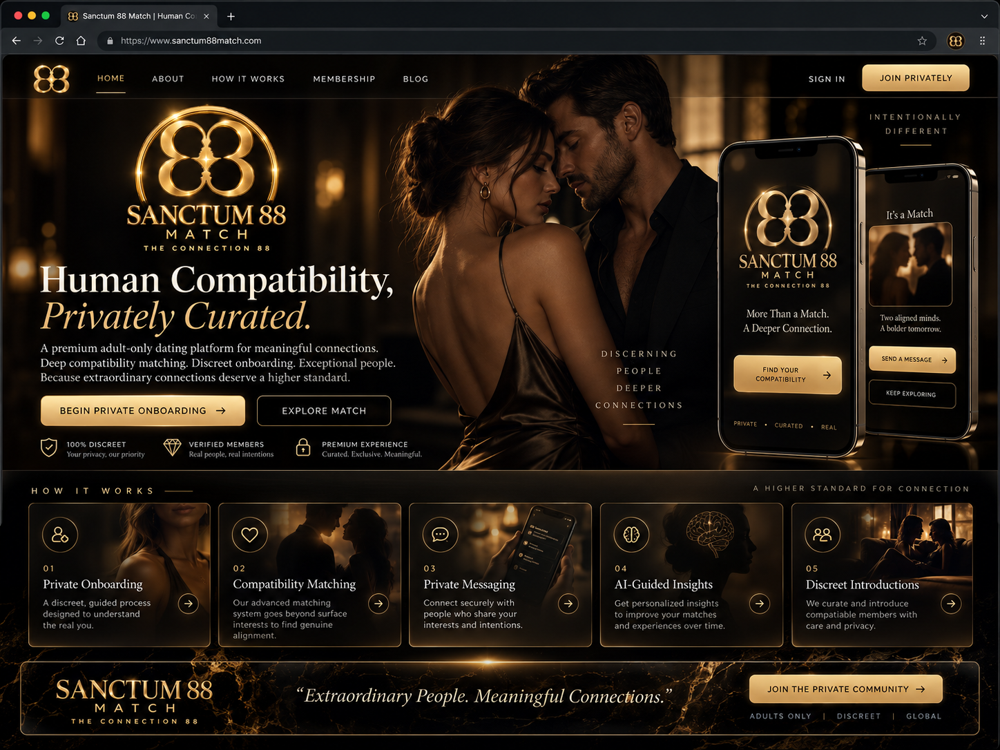

Verified Human
Identity and age checks are designed to reduce impersonation, duplicate accounts and obvious fraud signals.
BEGINNING · TRUST FIRST
Safety is not one badge. It is a chain of decisions: identity, privacy, consent, controls, reporting and honest limits on what technology can know.
Identity and age checks are designed to reduce impersonation, duplicate accounts and obvious fraud signals.
Verification status should be visible without exposing raw ID information or unnecessary personal data.
Joining, matching, messaging, meeting or paying never creates consent to anything else.

LifeMatch should separate identity data from profile and matching information, minimise what it keeps, make blocking and reporting obvious and explain why an introduction is being suggested.
No hidden desirability ranking. No unexplained compatibility percentage. No pretending verification guarantees behaviour.
Technology can support safer introductions, but members remain responsible for boundaries, consent and real-world choices. LifeMatch is designed to help — not take over.